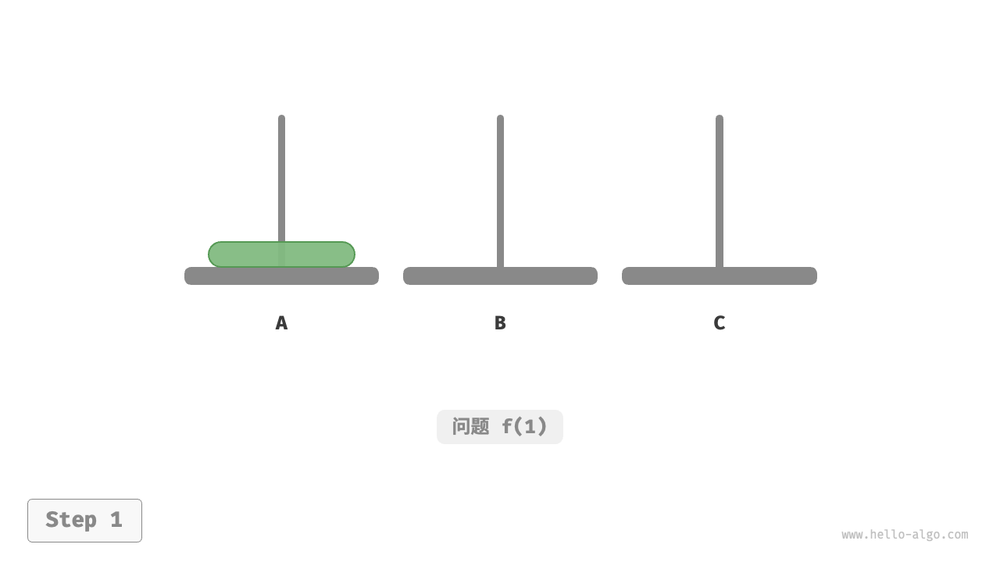

汉诺塔问题
在归并排序和构建二叉树中，我们都是将原问题分解为两个规模为原问题一半的子问题。然而对于汉诺塔问题，我们采用不同的分解策略。
!!! question
给定三根柱子，记为 `A`、`B` 和 `C` 。起始状态下，柱子 `A` 上套着 $n$ 个圆盘，它们从上到下按照从小到大的顺序排列。我们的任务是要把这 $n$ 个圆盘移到柱子 `C` 上，并保持它们的原有顺序不变（如下图所示）。在移动圆盘的过程中，需要遵守以下规则。
1. 圆盘只能从一根柱子顶部拿出，从另一根柱子顶部放入。
2. 每次只能移动一个圆盘。
3. 小圆盘必须时刻位于大圆盘之上。

我们将规模为 $i$ 的汉诺塔问题记作 $f(i)$ 。例如 $f(3)$ 代表将 $3$ 个圆盘从 A 移动至 C 的汉诺塔问题。
考虑基本情况
如下图所示，对于问题 $f(1)$ ，即当只有一个圆盘时，我们将它直接从 A 移动至 C 即可。
"<1>" 
"<2>"

如下图所示，对于问题 $f(2)$ ，即当有两个圆盘时，由于要时刻满足小圆盘在大圆盘之上，因此需要借助 B 来完成移动。
- 先将上面的小圆盘从
A移至B。 - 再将大圆盘从
A移至C。 最后将小圆盘从
B移至C。"<1>"

"<2>"
"<3>"

"<4>"

解决问题 $f(2)$ 的过程可总结为：将两个圆盘借助 B 从 A 移至 C 。其中，C 称为目标柱、B 称为缓冲柱。
子问题分解
对于问题 $f(3)$ ，即当有三个圆盘时，情况变得稍微复杂了一些。
因为已知 $f(1)$ 和 $f(2)$ 的解，所以我们可从分治角度思考，将 A 顶部的两个圆盘看作一个整体，执行下图所示的步骤。这样三个圆盘就被顺利地从 A 移至 C 了。
- 令
B为目标柱、C为缓冲柱，将两个圆盘从A移至B。 - 将
A中剩余的一个圆盘从A直接移动至C。 令
C为目标柱、A为缓冲柱，将两个圆盘从B移至C。"<1>"

"<2>"

"<3>"

"<4>"

从本质上看，我们将问题 $f(3)$ 划分为两个子问题 $f(2)$ 和一个子问题 $f(1)$ 。按顺序解决这三个子问题之后，原问题随之得到解决。这说明子问题是独立的，而且解可以合并。
至此，我们可总结出下图所示的解决汉诺塔问题的分治策略：将原问题 $f(n)$ 划分为两个子问题 $f(n-1)$ 和一个子问题 $f(1)$ ，并按照以下顺序解决这三个子问题。
- 将 $n-1$ 个圆盘借助
C从A移至B。 - 将剩余 $1$ 个圆盘从
A直接移至C。 - 将 $n-1$ 个圆盘借助
A从B移至C。
对于这两个子问题 $f(n-1)$ ，可以通过相同的方式进行递归划分，直至达到最小子问题 $f(1)$ 。而 $f(1)$ 的解是已知的，只需一次移动操作即可。
代码实现
在代码中，我们声明一个递归函数 dfs(i, src, buf, tar) ，它的作用是将柱 src 顶部的 $i$ 个圆盘借助缓冲柱 buf 移动至目标柱 tar ：
- "Python" ```python def move(src: list[int], tar: list[int]): """移动一个圆盘""" // 从 src 顶部拿出一个圆盘 pan = src.pop() // 将圆盘放入 tar 顶部 tar.append(pan)
def dfs(i: int, src: list[int], buf: list[int], tar: list[int]): """求解汉诺塔问题 f(i)""" // 若 src 只剩下一个圆盘，则直接将其移到 tar if i == 1: move(src, tar) return // 子问题 f(i-1) ：将 src 顶部 i-1 个圆盘借助 tar 移到 buf dfs(i - 1, src, tar, buf) // 子问题 f(1) ：将 src 剩余一个圆盘移到 tar move(src, tar) // 子问题 f(i-1) ：将 buf 顶部 i-1 个圆盘借助 src 移到 tar dfs(i - 1, buf, src, tar)
def solve_hanota(A: list[int], B: list[int], C: list[int]): """求解汉诺塔问题""" n = len(A) // 将 A 顶部 n 个圆盘借助 B 移到 C dfs(n, A, B, C)
- "C++"
```cpp
/* 移动一个圆盘 */
void move(vector<int> &src, vector<int> &tar) {
// 从 src 顶部拿出一个圆盘
int pan = src.back();
src.pop_back();
// 将圆盘放入 tar 顶部
tar.push_back(pan);
}
/* 求解汉诺塔问题 f(i) */
void dfs(int i, vector<int> &src, vector<int> &buf, vector<int> &tar) {
// 若 src 只剩下一个圆盘，则直接将其移到 tar
if (i == 1) {
move(src, tar);
return;
}
// 子问题 f(i-1) ：将 src 顶部 i-1 个圆盘借助 tar 移到 buf
dfs(i - 1, src, tar, buf);
// 子问题 f(1) ：将 src 剩余一个圆盘移到 tar
move(src, tar);
// 子问题 f(i-1) ：将 buf 顶部 i-1 个圆盘借助 src 移到 tar
dfs(i - 1, buf, src, tar);
}
/* 求解汉诺塔问题 */
void solveHanota(vector<int> &A, vector<int> &B, vector<int> &C) {
int n = A.size();
// 将 A 顶部 n 个圆盘借助 B 移到 C
dfs(n, A, B, C);
}
- "Java"
```java
/ 移动一个圆盘 /
void move(List
src, List tar) { // 从 src 顶部拿出一个圆盘 Integer pan = src.remove(src.size() - 1); // 将圆盘放入 tar 顶部 tar.add(pan); }
/ 求解汉诺塔问题 f(i) /
void dfs(int i, List
/ 求解汉诺塔问题 /
void solveHanota(List
如下图所示，汉诺塔问题形成一棵高度为 $n$ 的递归树，每个节点代表一个子问题，对应一个开启的 dfs() 函数，因此时间复杂度为 $O(2^n)$ ，空间复杂度为 $O(n)$ 。

!!! quote
汉诺塔问题源自一个古老的传说。在古印度的一个寺庙里，僧侣们有三根高大的钻石柱子，以及 $64$ 个大小不一的金圆盘。僧侣们不断地移动圆盘，他们相信在最后一个圆盘被正确放置的那一刻，这个世界就会结束。
然而，即使僧侣们每秒钟移动一次，总共需要大约 $2^{64} \approx 1.84×10^{19}$ 秒，合约 $5850$ 亿年，远远超过了现在对宇宙年龄的估计。所以，倘若这个传说是真的，我们应该不需要担心世界末日的到来。